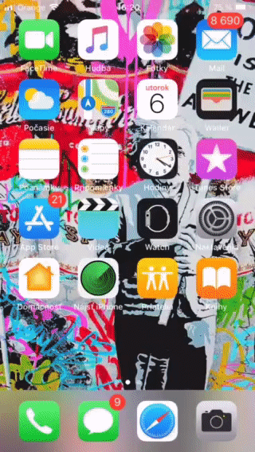
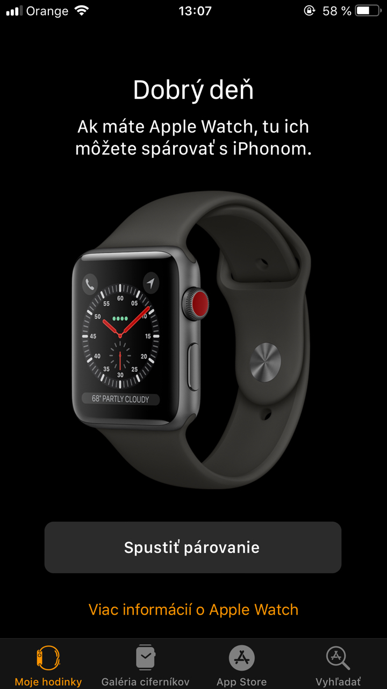

Force Touch
iPhone 6S prináša technológiu, ktorú Apple nazval 3D Touch alebo inak povedané Force touch. 3D Touch v novom iPhone 6S a 6S Plus rozoznáva silu vášho stlačenia, takže vám ponúkne alternatívne menu pri silnom stlačení, alebo len náhľad akcie či funkcie každej aplikácie s ktorou ste sa rozhodli pracovať. To znamená ak napríklad silnejšie stlačíte ikonu Messengeru môžete si okamžite zvoliť odoslať správu najpoužívanejším kontaktom.
Touch ID
Touch ID pri tomto modely je omnoho spoľahlivejšie ako pri predchádzajúcom, čas odozvy je minimálny. Touch ID taktiež uľahčuje všetku interakciu s aplikáciami. Pomocou tejto funkcie je práca s telefónom rýchlejšia keďže môžete využívať Touch ID ako heslo, to znamená že platby podpisujete otlačkom prsta (ak to vaša banka podporuje) a na sťahovanie aplikácie netreba už písať nezapamätateľné heslo ale jednoducho priložiť prst na home button.
Apple watch sync
Ako každý model aj 6s plus má nainštalovanú aplikáciu Watch ktorá umožňuje okamžité spárovanie s vašimi Apple hodinkami. V tejto aplikácii vidíte všetky dáta z hodiniek a na hodinkách zas všetky potrebné dáta z vášho iphonu. Táto symbióza medzi apple produktami je veľmi slávna a pochvaľovaná.
Facetime
Táto aplikácia vám umožňuje po pripojení na sieť komunikovať prostredníctvom prenosu obrazu a zvuku s inými užívateľmi apple zariadení.